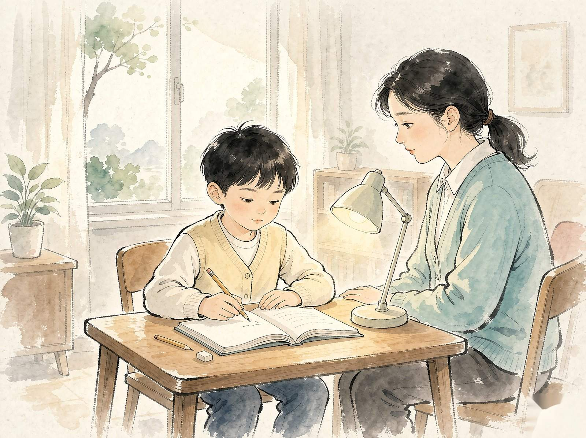

凡训蒙，须讲究。详训诂，明句读
我们知道，善待、敬重、尽责的本心，人人本来都有。
但这份本心，容易被杂念、习气盖住，就像明珠蒙上尘土。
所以启蒙教导，一定要细细讲清道理，探究根本，分清什么是内核本心，什么是外在形式。
读书学古，不是死背字句，要懂得背后的用心；教法只是方便，我们的本心本来清明。

想要深究经典的道理，先要读懂文字本身。
训诂，就是细细弄清每个字原本是什么意思；句读，就是分清一句话在哪里停顿、在哪里收尾。
古书中没有现代标点，断错了，理解就会跑偏。
但也要记得：认字、断句，只是入门的工具。工具好用，是为了读懂背后的本心义理，不要一辈子困在文字考据里。

落到心上理解
承接上一课存疑：十义既说人所同、本心既本自具足，为何还要另立启蒙训导？
蒙，不是愚笨，是无明覆蔽。
讲究，有两层次第：一是文字训诂，厘清名相；二是义理深探，直达心性本源。
教学的大忌，是以文字相、教条相替代本心。依理启蒙，而不执着任何固定教法、固定讲法，便是教化层面的无住。
另有一问：讲究说到什么程度才算够，深浅如何拿捏而不落入文字知见。
利根之人，句读训诂够用即可，快速透入义理；钝根、初学之人，必须从训诂句读一步步夯实根基，否则义理全是想象、附会。
详，是当详则详；明，是当明则明。根基不足，不可跳脱文字空谈心性；根基已稳，则不可长年纠缠文字考据，滞于理障。
训蒙等于填鸭灌输，讲究流于文字考据；沉溺训诂考据，以字解为究竟
训蒙为拂尘显性，讲究本末兼顾，不执教法名相；训诂句读为入门阶梯，够用即转向义理
- 人人本具清明本心，但是容易被杂念习气遮蔽，故需要启蒙。
- 启蒙教学，应当深究义理本源，不能只停留在背诵文字。
- 讲究包含两层：辨明文字，通达义理，本末不可颠倒。
- 教法是方便手段，本心本来具足，教化不会凭空给我们增加智慧。
- 训诂，考究字源古训，明白文字本义；句读，分清文句停顿起止。
- 这是读古书、研经典的基础功夫，是“讲究”的第一步。
- 根基不够，不能跳过文字空谈大道；根基成熟，不可长久滞留在文字功夫里。
- 文字是载道的工具，工具是方便，本心觉悟才是目的地。
一、勘俗见。文脉由人伦归宿转入教化方法论。十义是“教之所期”，讲究是“教之所由”。纠正一个普遍误区：蒙学不等于低幼简单，蒙，是一切无明遮蔽的代称，成人的习气蒙蔽，同样属于“蒙”，同样需要讲究、反思。文脉由教化总纲，下沉到实操治学次第。纠正两种常见学法：一是考据成瘾，把学问变成文字竞赛；二是好高骛远，不识字义就空谈感悟。
二、现代对照。放到当下家庭教育、阅读学习，就是重理解、重溯源，反对机械背诵。不是不要文字基础，而是文字为表，心性义理为里。放到今天，就是字词注释、原文断句、查证出处。读古籍，先扫清字面障碍，再谈感悟。
三、承接常变主线。讲解的方式、教材、话术，随时代、根器调整（可变之相）；启发本心、辨明本末的教化内核不变（常）。文字读音、释义、断句方案，会随版本、文献考证更新（可变之相）；由文字通达义理、不执文字的治学内核不变（常）。
四、承接教与学二分。家长自身先做到考究义理、不盲从俗说，属于施教一侧；学习者学会追问根源、不盲从听闻，是自主修习。师长示范严谨查考字义、审慎断句，属于施教一侧；学习者养成不望文生义的习惯，是自主修习。
承接选择力练习：善用讲究之法启蒙，明教法为筏，不困于文字教条。
凡训蒙，须讲究。详训诂，明句读
一字义与句读
训，训导启沃；蒙，《易经》蒙卦，蒙昧未明、本心为尘所覆。讲究：讲则疏通文义，究则穷究根源，辨析是非、勘破俗解。
上句释义：但凡启蒙教化，必要讲明文义、深究义理本源，分清本末表里，不可囫囵吞枣、盲从俗传。
训诂：训者顺也，顺其文意；诂者故也，求古人之本言。句读，句为语意完结之处，读为语气停顿之处。
下句释义：启蒙治学，要详究文字古训本义，理清文句的停顿与分界，扫清文字层面的障碍，而后义理可明。
二命题考辨
（1）十义之后，转入教化方法论
前文证“人心同，本有良知”，此处一转：既然本有，为何还要学习训导？
答案就是“蒙”——无明习气覆盖，虽有而不显。
整个润泽说的体系在这里可以呼应：自性本自具足，不是不需要修学；修学、讲究，是去蔽，不是增益。和《坛经》“何其自性本自清净”一脉贯通。
（2）对照当下现代语境
当下教育两种极端：一端是唯知识论，堆砌信息、背诵考点；一端是放任自流，认为本性自足不必学习。
“凡训蒙，须讲究”守持中道：承认本心本具，同时承认习气覆蔽的现实，以讲究为手段，层层剥离遮蔽。
讲究不是玄谈，包含扎实的名相、史料、义理考证，先把概念勘正，再往心性上归。
当代读古籍，两类通病：
一类是现代快餐式阅读，不看注释、不校版本，凭主观感受随意解读经典；
一类是学院式考据，穷尽异文、罗列众说，一辈子停留在文献层面，不见心性之旨。
“详训诂，明句读”的中道：该详则详，该明则明，目的是通达义理，不是积累考据见闻。
（3）般若范式互参
教化、训蒙、讲说，都是因缘层面建立的善巧方便。
文字、字义、断句，全部属于缘起假名，是载道之筏。
联动三才五蕴太极空杯模型：虚空自性为本，习气尘垢为外缘遮蔽；讲究、讲说如同擦拭，擦拭动作是假名，虚空本体不曾增减。虚空自性为本，文字为外缘载体。借文字、句读疏通路径，令义理显发，载体本身不是虚空。
呼应“本乎数”：蒙为始，讲究为开启之功，由暗向明，一阴一阳。字有定训，文有起止，是秩序之象；由秩序而入无住，是治学的阴阳转换。
延伸义理：
《金刚经》：无有法可说，不是废弃言说教化，是言说用来破执，说完即舍，不执言说为实。讲究正是这个道理。所言“知我说法，如筏喻者”，正合于此。训诂句读即是筏，渡河之后，不必背负木筏而行。
《道德经》：涤除玄览。讲究，就是涤除的教学版本，扫除尘翳，令玄鉴自明。道可道，非常道。文字能描述道，但是文字本身不是道。
《坛经》：迷时师度，悟了自度。训蒙讲究，即是师度；目标不是依附师长讲说，是唤醒自度的觉性。经文字句，只是接引；若识自性，不执经文。
（4）治学次第：由粗入细，由器向道
凡训蒙须讲究，是总纲领；详训诂、明句读，是第一层下手功夫。
这套次第，刚好对应两种根器的施教分寸：
利根，闻一知十，训诂句读点到为止，不耗过多心力，直趋义理；
钝根初学，必须字字考究、句句厘清，防止错解生根，变成难以拔除的知见障碍。
不是考据本身有错，是要知其为阶梯，而非殿堂。
三跨典互参（老庄、般若对照）
· 《道德经》：为学日益，为道日损。训蒙讲究，为学与为道并举；考究文义是日益，扫执去蔽是日损。少则得，多则惑。训诂详而不滥，便是守少，过多异说反生迷惑。
· 《庄子》：吾生也有涯，而知也无涯，以有涯随无涯，殆已。讲究贵在知本，不向外追逐无穷文辞考据。得意而忘言。训诂句读，为了得意；得意之后，可忘言。
· 串联前文：自天地四时、五行万物、七情八音、九族、五伦十义，完成“人伦本心本同”的立论，继而转向：如何破除蒙蔽，显发本心？便是讲究、训蒙的教化路径。自天地万物、七情八音、九族五伦十义，确立人伦本心；转入教化讲究，再落地为文字训诂、句读的基础功夫，搭建一条由文字通往心性的实修路径。
四和前面课程的张力
次第链条：……→ 此十义，人所同 → 凡训蒙，须讲究 → 详训诂，明句读
呼应“人不学，不知义”：不学则蒙，讲究正是学的正途，考究义理，不困表层；学的起点，先读懂文字，不令文义扭曲；
呼应“玉不琢，不成器”：讲究就是琢磨，磨去习气尘蒙，本心光明方显；训诂句读，就是打磨文字这层外壳，里面义理方能显露；
呼应“教之道，贵以专”：讲究不是散乱泛览，专一穷究本源，是教的核心准则。专一在本义文脉上用功，不泛滥追逐旁支异说。
五1. 讲究考究，容易落入文字知见、理障，如何在讲究的同时，不增长我慢、不困于知解？
2. 根器不同，有的人适合少言直入，有的人需要层层考究，如何拿捏讲究的分寸？
3. 训蒙以唤醒本心为目标，那讲究、考据，到什么时候该放下？
4. 多家训诂释义不同、版本句读互异，如何抉择，而不陷入众说纷争？
5. 如何区分“审慎考证”和“贪多猎奇的考据我慢”？边界怎么把握？
6. 已经通训诂、明句读之后，以什么标准判断自己可以放下文字，向内观照？